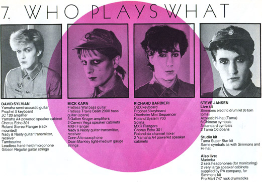

Who Plays What
Fan Library, July 1982. p. 31.
Who Plays What
Fan Library, July 1982. p. 31.
David Sylvian:
- Yamaha semi-acoustic guitar.
- Prophet 5 keyboard [Sequential Circuits].
- JC 120 amplifier.
- Yamaha A4 powered speaker cabinet.
- Chorus Echo 301.
- Roland Stereo Flanger (rack mounted).
- Nady & Nasty guitar transmitter, receiver.
- Tambourine.
- Leadless hand-held microphone.
- Gibson Regular guitar strings.
Mick Karn:
- Fretless Wal bass guitar.
- Fretless Tavis Bean 2000 bass guitar (spare).
- 3 Galien Kruger amplifiers.
- 2 Cerwin Vega speaker cabinets.
- MXR Flanger.
- Nady & Nasty guitar transmitter, receiver.
- Conn Alto saxophone.
- Dean Markley light-medium guage strings.
Richard Barbieri:
- OBX keyboard [Oberheim].
- Prophet 5 keyboard [Sequential Circuits].
- Oberheim Mini Sequencer.
- Roland System 700.
- Solina [Arp].
- MXR Flangers.
- Chorus Echo 301.
- Roland six channel mixer.
- 2 Yamaha A4 powered speaker cabinets
Steve Jansen:
Live Kit:- Simmons electric drum kit (6 tom toms).
- Acoustic hi-hat (Tama).
- 6 Chinese cymbals.
- 3 Standard cymbals.
- 2 Tama Octobans.
- Tama Super Star kit.
- Same cymbals as with Simmons and hi-hat.
- Marimba.
- 2 sets headphones (for monitoring).
- 2 very large speaker cabinets provided by PA company, for Simmons kit.
- Pro Mart 747 rock drumsticks.
«Return to articles
Design & content © 2008 Life in Tokyo. Images, articles and video © their respective owners. For issues concerning the usage of this content please contact the webmaster.